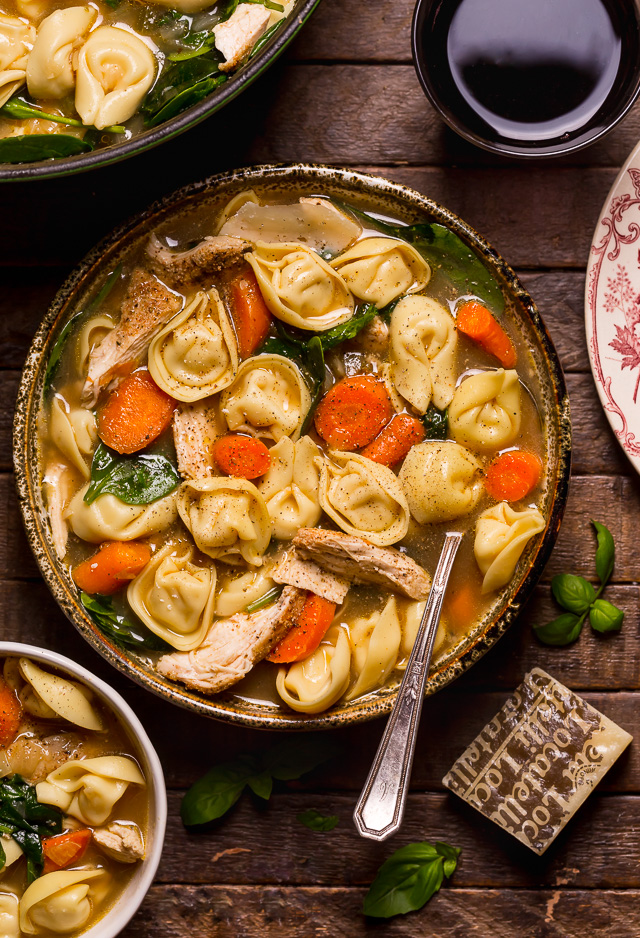

Tortellini Soup

Description
This hearty tortellini soup is perfect for a
cold night. You can add extra tortellini,
sausage, or anything as desired! I use one of
the large packs of tortellini from Costco.
Ingredients
- 1 lb. Italian sausage
- 1 cup sliced carrots
- 1 1/2 cups sliced zucchini
- 1 cup chopped onion
- 2 cloves garlic, thinly sliced
- 5 cups beef broth
- 16 oz. frozen tortellini
- 1/2 cup red wine
- 1/2 tsp. basil
- 1/2 tsp. oregano
- 8 oz. tomato sauce
- 1 can chopped tomatoes
- 1 green pepper, chopped into 1/2-inch pieces
- 3 tbsp. chopped parsley
Directions
- Brown and drain Italian sausage.
- Add garlic, onion, and carrots.
- Cook until onion and garlic soften.
- Transfer into soup kettle.
- Add beef broth, red wine, chopped tomatoes,
basil, oregano, and tomato sauce. Cook
uncovered for 30 minutes.
- Skim
- Add tortellini and zucchini.
- Cook for another 20 minutes.
- Add green pepper, parsley, and adjust
seasonings.